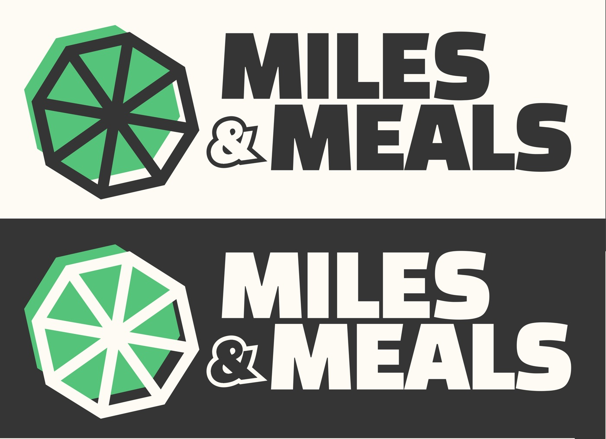

A lime, a parasol and a wheel
At first glance the mark is a lime, an ingredient used in kitchens all over the world. It's also a parasol, like the ones over food stalls everywhere. Its spokes double as a wheel, for a brand that's always on the move. The bold, slightly slanted wordmark keeps it modern.
